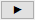

一元配置分散分析ダイアログボックス
OneWayANOVA-Dialog
このダイアログは、繰り返し測定の一元配置分散分析を実行するために使用します。このダイアログを開くには、メニューから統計：ANOVA：一元配置と選択します。
サポート情報
再計算
| 再計算
|
分析結果の再計算を制御します。
詳細情報は、 分析結果の再計算をご覧下さい。
|
入力
入力データの形式として、インデックスまたは素データ値を指定します。
| インデックス
|
このモードでは、1列に因子変数のレベルを含み、ほかの列は対応する応答データです。
因子
- ファクター列を指定因子列がテキスト列の場合、カテゴリー列に設定されます。
データ
- 対応するデータ列を指定します。
 ：結果プロットで因子のテキスト値の代わりに数値を表示する場合は、因子列の列の属性をグループに設定してください。 ：結果プロットで因子のテキスト値の代わりに数値を表示する場合は、因子列の列の属性をグループに設定してください。
|
| 素データ値
|
このモードでは、ファクター変数の各レベルからのレスポンスデータが別々の列に保存されます。
因子
- 名前
- ファクター名を入力
- レベルの数
- デフォルト=2。
- レベルの数を指定します。各レベルで、レベルi コントロールを持ちます。システム変数@AMLを使うと、ANOVAでサポートできる最大数を変更することができます。デフォルトは25になっています。@AML変数に新しい値を割り当て、レベルの最大数を変更できます。
- レベルi の名前
- デフォルト = ファクターi レベルi
- レベルの名前を指定します。自動の場合、シートのロングネームを使用します。
データ
- レベルi
- 各レベルのデータ列を指定します。各レベルの隣にあるデータ選択のコントロールを使うか、データとの右にある参照ボタンをクリックしてワークシートから選択するを選び、ワークシート列をクリックして選択します。
|
記述統計
出力レポートに記述統計量の結果を含めるにはチェックを付けます。
有意水準
一元配置分散分析の有意水準を指定します。
平均比較
事後対比較の手法を指定します。
| 有意水準
|
対の平均比較の有意水準を指定します。
|
| Tukey
|
対の平均比較の異なる手法です
(詳細については、アルゴリズムをご覧下さい。)
|
| Bonferroni
|
| Dunn-Sidak
|
| Fisher LSD
|
| Scheffe
|
| Holm-Bonferroni
|
| Holm-Sidak
|
| グループ文字表
|
文字による平均値の差を示した。同じ文字は有意差がないことを意味し、異なる文字は2つのグループ間の有意差を意味します。
|
等分散性の検定
分散の均一性の検定手法を選択します。
| 有意水準
|
等分散性の検定の有意水準を指定します。
|
| Levene | |
|
等分散性の検定の異なる方法
(詳細については、アルゴリズムをご覧下さい)
|
| Levene ()^2
|
| Brown-Forsythe
|
検出力解析
検出力解析の実行を選択します。
| 実際の検出力
|
実際の検出力を実行するかどうかを指定します。
|
| 仮説の検出力
|
仮説の検出力を実行するかどうかを指定します。
|
| 有意水準
|
仮説の検出力分析の有意水準を指定します。
|
| 仮説標本サイズ
|
各エントリーの領域を分けるため仮説のサンプルサイズを指定します。
|
出力
| グラフ配置
|
グラフを縦列に配置
- 出力グラフを配置する列数を指定します。
グラフ中に同じ形式のプロットを配列
- 1つのグラフウィンドウに同じタイプのプロットを追加します。
|
| レポート表
|
レポートワークシート表を指定します。
ブック
- 目的のワークブックを指定します。出力ブックはブック名にあります。
- <なし>: レポートワークシート表を出力しません（ブック名ボックスは空で読み取り専用です）。
- <自動>: 選択された最初の入力データの場所に出力します（異なるワークブックから入力データ範囲を指定できます）。入力データがOriginのワークブックにない場合、自動でワークブックを選択します（通常は新しいワークブックを作成）。
- <既存>: 指定した既存のワークブックを使用します。
シート
- 出力先ワークシートです（常に<新規>で名前はSheetName）。
結果ログ
- 結果ログにレポートを出力します。
スクリプトウィンドウ
- スクリプトウィンドウにレポートを出力します。
ノートウィンドウ
- このドロップダウンリストを使って目的のノートウィンドウを指定します。
- <なし>: どのノートウィンドウにも出力しません。
- <新規>: 新しいノートウィンドウに出力します。ここにノートウィンドウの名前を入力します。
|
| プロットデータ
|
プロットのデータの出力先を指定します（プロットするには、下のプロットオプションを選択する必要があります。）。
ブック
- プロットデータを出力するワークブックを指定します。
- <自動>: ブック名を<なし>にしていなければ、レポート表ブックの設定に従います。
- <既存>: 指定した既存のワークブックを使用します。
シート
- 出力先ワークシートです（常に<新規>で名前はSheetName）。
|
| オプショナルなレポートテーブル
|
レポートワークシートに追加の表を含めるかどうかを指定します。
ノート
- ノート表
入力データ
- 入力データの表
マスクされたデータ
- マスクデータのテーブル
欠損値
- 欠損値のテーブル
|
プロット
| 棒グラフ
|
レポートテーブルにプロットを出力するかどうかを指定します。
Note:ファクター列がカテゴリーとして設定されていると、出力グラフは、ファクター列に対するカテゴリータブ(列のプロパティ)で指定されたカテゴリー順を参照してプロットされます。
|
| ボックスチャート
|
| 平均値プロット（SDをエラーバー表示）
|
| 平均値プロット（SEをエラーバー表示）
|
| 平均比較プロット
|
これは、事後対比較が実行されたときにのみ利用可能です（平均比較ツリーで制御）。
全ての選択された手法の平均比較プロットを出力するかどうかを指定します。
|